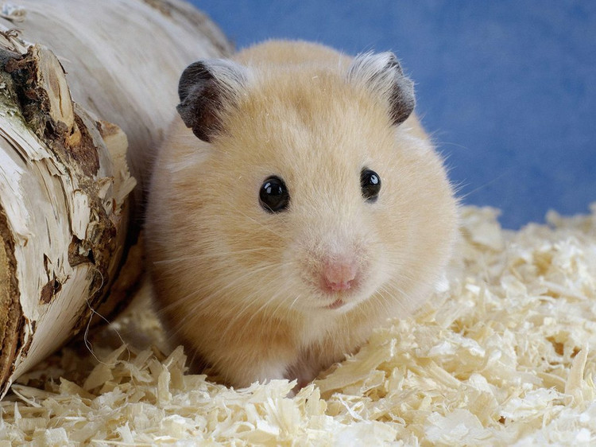

形状
精确的自适应椭圆
border-radius:x/y, 可以接受数值和百分比
精确的椭圆：两个圆角半径分别指定为元素宽高的一半。
精确的椭圆：两个圆角半径分别指定为元素宽高的一半。
自适应椭圆
自适应半椭圆
自适应半椭圆
2种写法，一样的效果
border-radius:50% 50% 0 0/100% 100% 0 0
border-radius:50%/100% 100% 0 0;
因为：底部两个角的垂直圆角是零，那么它们的水平圆角是多少就完全不重要了，因为此时水平圆角总是会被计算为零。
1/4椭圆
平行四边形
平行四边形
多一个标签矫正变形文字
利用伪元素，无需多加标签
伪类z-index:-1;不会遮挡内容
伪类z-index:-1;不会遮挡内容
利用伪类实现各种效果
边框内圆角效果
多重边框
菱形图片

8-1：2个标签实现菱形图片
问题：图片旋转过来之后并没有填充整个菱形，出现了空白
原因：图片最大尺寸是外层div的宽高，旋转之后，图片宽高要按照外层DIV的对角线长度计算，显然div对角线长度>div宽高
对角线计算:这里是正方形（w=h），则对角线=(宽度或者高度)*√2
图片缩放比例: = √2 ≈ 1.42
注意：这里只需要知道x和y轴缩放比例，不是实际尺寸，这里是正方形，则x、y的缩放比例一样。
解决后的效果如示例8-2
原因：图片最大尺寸是外层div的宽高，旋转之后，图片宽高要按照外层DIV的对角线长度计算，显然div对角线长度>div宽高
对角线计算:这里是正方形（w=h），则对角线=(宽度或者高度)*√2
图片缩放比例: = √2 ≈ 1.42
注意：这里只需要知道x和y轴缩放比例，不是实际尺寸，这里是正方形，则x、y的缩放比例一样。
解决后的效果如示例8-2
8-2：2个标签实现菱形图片
没有出现空白了。但仅适用于正方形图片，且需要一个包裹容器
没有出现空白了。但仅适用于正方形图片，且需要一个包裹容器
8-3：1个标签实现菱形图片，不需要包裹容器
下面图片不是正方形图片。
下面图片不是正方形图片。
-

原图片 -
菱形 -
4条边相等的菱形
计算：4条边相等菱形，坐标点计算。
（1）图片宽度：250*186。
（2）最大正方形尺寸：186*186。
（3）宽度分为3部分：（250-186）/2=32，取用中间的正方形，所以左右会有32px多出。
（4）总共需要4个坐标点，top、right、bottom、left。
top：(250/2,0) = (125,0) right：(250-32,186/2) = (218,93) bottom：(250/2,186) = (125,186) left：(32,186/2) = (32,93)
（1）图片宽度：250*186。
（2）最大正方形尺寸：186*186。
（3）宽度分为3部分：（250-186）/2=32，取用中间的正方形，所以左右会有32px多出。
（4）总共需要4个坐标点，top、right、bottom、left。
top：(250/2,0) = (125,0) right：(250-32,186/2) = (218,93) bottom：(250/2,186) = (125,186) left：(32,186/2) = (32,93)